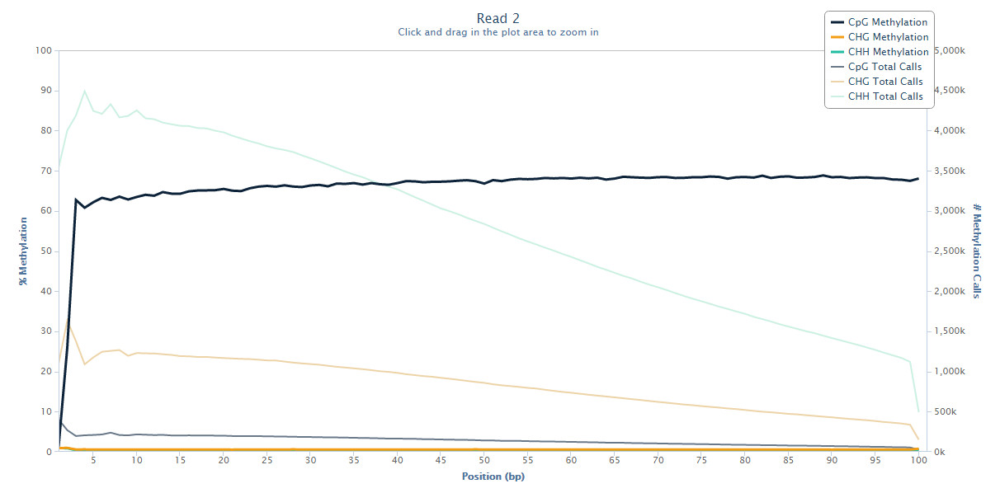

Methylation extraction
Bismark comes with a supplementary bismark_methylation_extractor script which operates on Bismark result files and extracts the methylation call for every single C analysed. The position of every single C will be written out to a new output file, depending on its context (CpG, CHG or CHH), whereby methylated Cs will be labelled as forward reads (+), non-methylated Cs as reverse reads (-). The resulting files can be imported into a genome viewer such as SeqMonk (using the generic text import filter) and the analysis of methylation data can commence. Alternatively, the output of the methylation extractor can be transformed into a bedGraph and coverage file using the option --bedGraph (see also --counts). This step can also be accomplished from the methylation extractor output using the stand-alone script bismark2bedGraph (also part of the Bismark package available for download at bioinformatics.babraham.ac.uk). The coverage file can also be imported into SeqMonk directly using Import Data > Bismark (cov). Optionally, the bedGraph counts output can be used to generate a genome-wide cytosine report which reports the number on every single CpG (optionally every single cytosine) in the genome, irrespective of whether it was covered by any reads or not. As this type of report is informative for cytosines on both strands the output may be fairly large (~46mn CpG positions or >1.2bn total cytosine positions in the human genome...). The bedGraph to genome-wide cytosine report conversion can also be run individually using the stand- alone module coverage2cytosine (also part of the Bismark package available for download at bioinformatics.babraham.ac.uk).
As of Bismark version 0.6 or higher the default input format for the bismark_methylation_extractor is BAM/SAM (or potentially CRAM if you’ve got Samtools 1.2+ installed).
The methylation extractor output looks like this (tab separated):
- seq-ID
- methylation state
- chromosome
- start position (= end position)
- methylation call
Methylated cytosines receive a + orientation, unmethylated cytosines receive a - orientation.
Examples for cytosines in CpG context:
HWUSI-EAS611_0006:3:1:1058:15806#0/1 - 6 91793279 z
HWUSI-EAS611_0006:3:1:1058:17564#0/1 + 8 122855484 Z
Examples for cytosines in CHG context:
HWUSI-EAS611_0006:3:1:1054:1405#0/1 - 7 89920171 x
HWUSI-EAS611_0006:3:1:1054:1405#0/1 + 7 89920172 X
Examples for cytosines in CHH context:
The bismark_methylation_extractor comes with a few options, such as ignoring the first --no_overlap (on by default): specifying this option will extract the methylation calls of overlapping parts in the middle of paired-end reads only once (using the calls from the first read which is presumably the one with a lowest error rate).
For a full list of options type: bismark_methylation_extractor --help on the command line or refer to the Appendix section at the end of this User Guide.
Methylation extractor output
By default, the bismark_methylation_extractor discriminates between cytosines in CpG, CHG or CHH context. If desired, CHG and CHH contexts can be merged into a single non-CpG context by specifying the option --merge_non_CpG (as a word of warning, this might produce files with up to several hundred million lines...).
Strand-specific methylation output files (default):
As its default option, the bismark_methylation_extractor will produce a strand-specific output which will use the following abbreviations in the output file name to indicate the strand the alignment came from:
OT – original top strand
CTOT – complementary to original top strand
OB – original bottom strand
CTOB – complementary to original bottom strand
Methylation calls from OT and CTOT will be informative for cytosine methylation positions on the original top strand, calls from OB and CTOB will be informative for cytosine methylation positions on the original bottom strand. Please note that specifying the --directional (the default mode) option in the Bismark alignment step will not report any alignments to the CTOT or CTOB strands.
As cytosines can exist in any of three different sequence contexts (CpG, CHG or CHH) the bismark_methylation_extractor default output will consist of 12 individual output files per input file (CpG_OT_..., CpG_CTOT_..., CpG_OB_... etc.).
Context-dependent methylation output files (--comprehensive option):
If strand-specific methylation is not of interest, all available methylation information can be pooled into a single context-dependent file (information from any of the four strands will be pooled). This will default to three output files (CpG-context, CHG-context and CHH-context), or result in 2 output files (CpG-context and Non-CpG-context) if --merge_non_CpG was selected (note that this can result in enormous file sizes for the non-CpG output).
Both strand-specific and context-dependent options can be combined with the --merge_non_CpG option.
Optional bedGraph output
The Bismark methylation extractor can optionally also output a file in bedGraph format which uses 0-based genomic start and 1- based end coordinates. The module bismark2bedGraph (part of the Bismark package) may also be run individually. It will be sorted by chromosomal coordinates and looks like this:
As the methylation percentage is per se not informative of the actual read coverage of detected methylated or unmethylated reads at a position, bismark2bedGraph also writes out a coverage file (using 1-based genomic genomic coordinates) that features two additional columns:
<chromosome> <start position> <end position> <methylation percentage> <count methylated> <count unmethylated>
These two additional columns enable basically any downstream processing from the file. By default, this mode will only consider cytosines in CpG context, but it can be extended to cytosines in any sequence context by using the option --CX (cf. Appendix (III)).
(Optional): genome-wide cytosine report output
Starting from the coverage output, the Bismark methylation extractor can optionally also output a genome-wide cytosine methylation report. The module coverage2cytosine (part of the Bismark package) may also be run individually. It is also sorted by chromosomal coordinates but also contains the sequence context and is in the following format:
<chromosome> <position> <strand> <count methylated> <count unmethylated> <C-context> <trinucleotide context>
The main difference to the bedGraph or coverage output is that every cytosine on both the top and bottom strands will be considered irrespective of whether they were actually covered by any reads in the experiment or not. For this to work one has to also specify the genome that was used for the Bismark alignments using the option --genome_folder <path>. As for the bedGraph mode, this will only consider cytosines in CpG context by default but can be extended to cytosines in any sequence context by using the option --CX (cf. Appendix (III)). Be aware though that this might mean an output with individual lines for more than 1.1 billion cytosines for any large mammalian genome...
GpC methylation assessment: Context-specific methylation summary report
Every time coverage2cytosine is run, the counts for each cytosine context are recorded and printed to a special file called *.cytosine_context_summary.txt for each input coverage file.
The report (introduced here) looks at 2 bp downstream, as well as 1 bp upstream of the cytosine taking part in the methylation call. This is useful for looking at methylation in specific contexts (e.g. CpA only), and also when using GpC methylases that introduce methylation in GpC context. The report looks like this:
upstream C-context full context count methylated count unmethylated percent methylation
A CAA ACAA 308398 93360 23.24
C CAA CCAA 329555 75518 18.64
G CAA GCAA 242262 118175 32.79
T CAA TCAA 302209 86219 22.20
A CAC ACAC 266786 91121 25.46
C CAC CCAC 409749 89154 17.87
...
(Optional): NOMe-seq or scNMT-seq
The coverage2cytosine module can be instructed that a sample is a NOMe-seq (Nucleosome Occupancy and Methylome sequencing) or scNMT-seq (single-cell Nucleosome, Methylation and Transcription sequencing) sample, where accessible DNA gets methylated in a GpC context (sets option --gc as well). The option --nome-seq:
(i) filters the genome-wide CpG-report to only output cytosines in ACG and TCG context
(ii) filters the GC context output to only report cytosines in GCA, GCC and GCT context
Both of these measures aim to reduce unwanted biases, i.e. the influence of G-CG (intended) and C-CG (off-target) on endogenous CpG methylation, and the influence of CpG methylation on (the NOMe-seq specific) GC context methylation. PLEASE NOTE that NOMe-seq data requires a .cov.gz file as input which has been generated in non-CG mode!! (--CX), else the GpC output file will be empty...
M-bias plot
Starting with Bismark v0.8.0, the Bismark methylation extractor also produces a methylation bias plot which shows the methylation proportion across each possible position in the read (described in further detail in: Hansen et al., Genome Biology, 2012, 13:R83). The data for the M-bias plot is also written into a coverage text file (ending in .cov or .cov.gz) and is in the following format:
This allows generating nice graphs by alternative means, e.g. using R or Excel. The plot is also drawn into a .png file which requires the Perl module GD::Graph (more specifically, both modules GD::Graph::lines and GD::Graph::colour are required); if GD::Graph cannot be found on the system, only the table will be printed. The plot also contains the absolute number of methylation calls (both methylated and unmethylated) per position. For paired-end reads two individual M-bias plots will be drawn.
The M-bias plot can for example show the methylation bias at the start of reads in PBAT-Seq experiments:

For more on this topic please also see this post on QCFail.com.
Or it can reveal a 3’-end-repair bias at the first couple of positions in read 2 of paired-end reads, like here:

For more on this topic please also see this post on QCFail.com.
The M-bias plot should enable researchers to make an informed decision whether or not to leave the bias in the final data or to remove it (e.g. using the methylation extractor option --ignore).
(III) Running bismark_methylation_extractor
USAGE: bismark_methylation_extractor [options] <filenames>
A typical command for a single-end file could look like this:
A typical command for a paired-end file could look like this:
The methylation extractor can also auto-detect the alignment mode and will set the options above automatically. A typical command including the optional bedGraph output could look like this:
A typical command including the optional genome-wide cytosine methylation report could look like this: